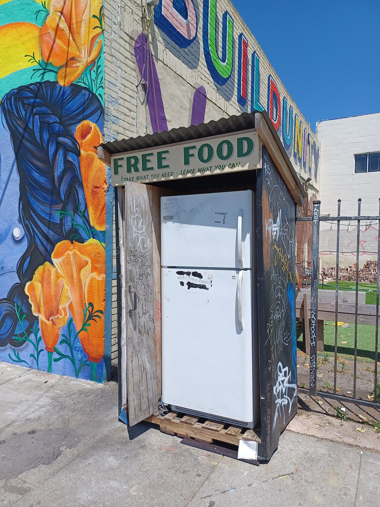

수원서 '햇빛냉장고' 연구세미나…"시민 햇빛발전 수익을 공유냉장고 43곳 먹거리 나눔으로", '햇빛 먹거리 연대기금' 제안

수원지속가능발전협의회 30일 세미나, 전기료·수리비를 공모사업·후원에 기대는 공유냉장고와 시민 출자 발전소 잇는 방안 논의…에너지협동조합·시민햇빛발전 사회적협동조합·수원시 미래에너지팀장 토론, 운영협의체·소규모 시범사업은 후속 과제
경기 수원에서 시민이 출자해 세운 햇빛발전소의 수익을 동네 공유냉장고의 먹거리 나눔으로 돌리자는 제안이 연구세미나에서 나왔다. 수원지속가능발전협의회는 30일 협의회 대강의실에서 '수원형 햇빛냉장고 모델 연구세미나'를 열고, 시민들이 꾸려 온 공유냉장고와 시민 햇빛발전소를 하나로 잇는 지역순환 방식을 논의했다. 수원에서는 공유냉장고 43곳이 운영되고 있지만 전기료와 수리비 같은 운영비는 공모사업과 후원에 기대고 있다. 발제를 맡은 박종아 수원공유냉장고시민네트워크 대표는 공유냉장고를 이어 가는 데 걸린 현장의 쟁점을 짚으며 '에너지·먹거리 상생 거버넌스'와 '햇빛 먹거리 연대기금'을 만들자고 제안했다. 김찬수 연구위원장이 좌장을 맡은 토론에는 조영미 수원에너지협동조합 이사장, 윤은상 수원시민햇빛발전사회적협동조합 이사장, 주상범 수원시 미래에너지팀장, 김병조 한신대 교수가 참여했고, 발전 수익을 사회에 다시 투자하는 방식과 공유냉장고 운영 안정화, 운영협의체 구성과 소규모 시범사업 같은 후속 과제가 다뤄졌다. 협의회 측은 시민이 만든 에너지의 가치가 "이웃의 밥상으로 이어지는" 순환 모델을 만들겠다고 밝혔지만, 기금 규모나 시범사업의 시기·장소는 공개되지 않았다.
시민에너지 관점
공유냉장고 43곳의 전기료와 수리비가 해마다 공모 선정과 후원을 기다려야 하는 돈이라면, 한 번 세우면 해마다 전기 판매 수익이 생기는 시민 햇빛발전소는 그 빈자리를 메울 수 있는 몇 안 되는 꾸준한 재원이다. 출자자에게 돌아갈 배당이 줄어든다는 걱정이 있을 수 있지만, 수익 일부가 출자한 시민이 사는 동네의 냉장고를 돌리는 데 쓰인다면 그것 역시 지역으로 돌아오는 배당이다. 외부 사업자의 발전소라면 수익의 쓰임새를 동네가 정할 수 없지만, 시민이 주인인 발전소는 조합원 총회의 결정만으로 이웃 밥상에 몫을 떼어 줄 수 있다. 운영협의체와 시범사업이 세미나 제안으로 끝나지 않도록, 수원시와 시민 발전 조합들은 공유냉장고 한두 곳과 발전소 한 곳을 잇는 첫 시범사업의 재원과 기준부터 정해야 한다.
출처: 뉴스Q 2026-10-30 장명구 원문 보기
水原で「ひだまり冷蔵庫」研究セミナー…「市民太陽光の収益をコミュニティ冷蔵庫43カ所の食の分かち合いに」、「ひだまり食料連帯基金」を提案
水原持続可能発展協議会が30日にセミナー、電気代・修理費を公募事業や寄付に頼るコミュニティ冷蔵庫と市民出資の発電所をつなぐ案を議論…エネルギー協同組合・市民太陽光社会的協同組合・水原市未来エネルギーチーム長が討論、運営協議体・小規模モデル事業は今後の課題
韓国京畿道水原（スウォン）市で、市民が出資して建てた太陽光発電所の収益を地域のコミュニティ冷蔵庫（共有冷蔵庫）による食の分かち合いに回そうという提案が研究セミナーで出された。水原持続可能発展協議会は30日、協議会の大講義室で「水原型ひだまり冷蔵庫モデル研究セミナー」を開き、市民が運営してきたコミュニティ冷蔵庫と市民太陽光発電所を一つにつなぐ地域循環の方式を話し合った。水原ではコミュニティ冷蔵庫43カ所が運営されているが、電気代や修理費などの運営費は公募事業と寄付に頼っている。発表を担った水原コミュニティ冷蔵庫市民ネットワークのパク・ジョンア代表は、コミュニティ冷蔵庫を続けていくうえでの現場の課題を指摘し、「エネルギー・食料共生ガバナンス」と「ひだまり食料連帯基金」をつくろうと提案した。キム・チャンス研究委員長が座長を務めた討論には、チョ・ヨンミ水原エネルギー協同組合理事長、ユン・ウンサン水原市民ひだまり発電社会的協同組合理事長、チュ・サンボム水原市未来エネルギーチーム長、キム・ビョンジョ韓神大学教授が参加し、発電収益を社会に再投資する方法とコミュニティ冷蔵庫の運営安定化、運営協議体の構成や小規模モデル事業といった今後の課題が取り上げられた。協議会側は、市民がつくったエネルギーの価値が「隣人の食卓につながる」循環モデルをつくると述べたが、基金の規模やモデル事業の時期・場所は公表されていない。
市民エネルギーの視点
コミュニティ冷蔵庫43カ所の電気代や修理費が、毎年の公募選定や寄付を待たなければならないお金だとすれば、一度建てれば毎年売電収入が生まれる市民太陽光発電所は、その穴を埋められる数少ない安定した財源だ。出資者への配当が減るとの懸念もありうるが、収益の一部が出資した市民の暮らす町の冷蔵庫を動かすのに使われるなら、それもまた地域に戻ってくる配当である。外部事業者の発電所なら収益の使い道を地域が決めることはできないが、市民が持ち主の発電所なら組合員総会の決定だけで隣人の食卓に取り分を回せる。運営協議体とモデル事業がセミナーの提案で終わらないよう、水原市と市民発電の組合は、コミュニティ冷蔵庫の1、2カ所と発電所1カ所をつなぐ最初のモデル事業の財源と基準から決めるべきだ。
出典: ニュースQ 2026-10-30 チャン・ミョング 原文を読む
水原举行"阳光冰箱"研究研讨会："把市民光伏收益用于43处共享冰箱的食物分享"，提议设立"阳光食物团结基金"
水原可持续发展协议会30日召开研讨会，讨论把依赖公开征集项目和捐助支付电费、维修费的共享冰箱与市民出资电站连接起来…能源合作社、市民阳光发电社会合作社和水原市未来能源组组长参加讨论，运营协议体和小规模试点列为后续课题
在韩国京畿道水原市，一场研究研讨会上有人提议，把市民出资建设的光伏电站收益用于社区共享冰箱的食物分享。水原可持续发展协议会30日在协议会大讲堂举办"水原型阳光冰箱模式研究研讨会"，讨论把市民一直在运营的共享冰箱和市民光伏电站连为一体的地区循环方式。水原目前有43处共享冰箱在运营，但电费、维修费等运营费用依赖公开征集项目和捐助。作主题发言的水原共享冰箱市民网络代表朴钟雅（音）梳理了共享冰箱持续运营面临的现场问题，提议建立"能源与食物共生治理"机制和"阳光食物团结基金"。由研究委员长金灿洙（音）主持的讨论中，水原能源合作社理事长赵英美（音）、水原市民阳光发电社会合作社理事长尹恩相（音）、水原市未来能源组组长朱相范（音）、韩神大学教授金炳祚（音）参加，讨论了发电收益的社会再投资方式、共享冰箱运营的稳定化，以及组建运营协议体、开展小规模试点等后续课题。协议会方面表示，要打造让市民创造的能源价值"延伸到邻居餐桌"的循环模式，但基金规模以及试点的时间和地点尚未公布。
市民能源视角
如果说43处共享冰箱的电费和维修费是每年都要等公开征集入选和捐助才能落实的钱，那么一旦建成、每年都有售电收入的市民光伏电站，就是少数能够填补这一缺口的稳定财源。有人可能担心出资人的分红会减少，但如果部分收益用于让出资市民所在社区的冰箱运转，那同样是回到本地的分红。如果是外部企业的电站，社区无法决定收益用途；而市民当家的电站，只需社员大会作出决定，就能为邻居的餐桌留出一份。为了不让运营协议体和试点停留在研讨会的提议上，水原市和市民发电合作社应当先为连接一两处共享冰箱与一座电站的首个试点确定资金和标准。
来源: NewsQ 2026-10-30 Jang Myeong-gu 查看原文
Suwon seminar on a "solar fridge" model proposes using citizen solar revenue to stock 43 community fridges, with a "solar food solidarity fund"
The Suwon Council for Sustainable Development held the seminar on the 30th on linking community fridges, whose electricity and repair bills depend on grant programmes and donations, with citizen-funded solar plants; an energy cooperative, a citizen solar social cooperative and the city's future energy team leader took part, with an operating council and a small pilot named as next steps
A research seminar in Suwon, Gyeonggi Province, has put forward a proposal to channel revenue from citizen-funded solar plants into food sharing through the city's neighbourhood community fridges. The Suwon Council for Sustainable Development held a "Suwon solar fridge model research seminar" in its main lecture room on the 30th to discuss a local circular model linking the community fridges that residents have been running with citizen solar power plants. Suwon has 43 community fridges in operation, but their running costs, such as electricity and repairs, depend on grant programmes and donations. Park Jong-a, head of the Suwon Community Fridge Citizens' Network, who gave the main presentation, set out the problems the fridges face in keeping going and proposed an "energy and food co-prosperity governance" structure and a "solar food solidarity fund". The discussion, chaired by research committee head Kim Chan-su, brought together Cho Young-mi, chair of the Suwon Energy Cooperative, Yoon Eun-sang, chair of the Suwon Citizen Solar Power Social Cooperative, Joo Sang-beom, head of the city's future energy team, and Hanshin University professor Kim Byung-jo, and covered ways of reinvesting generation revenue in the community, stabilising the fridges' operations, and next steps such as forming an operating council and running a small pilot. The council said it would build a circular model in which the value of energy made by citizens "carries through to neighbours' dinner tables", but the size of the fund and the timing and location of any pilot have not been made public.
Citizen Energy View
If the electricity and repair bills of 43 community fridges are money that has to wait every year on grant selections and donations, a citizen solar plant that earns electricity sales income every year once it is built is one of the few steady sources that can fill the gap. Some may worry that investors' dividends will shrink, but if part of the revenue keeps the fridges running in the neighbourhoods where those investors live, that too is a dividend returning to the community. With a plant owned by an outside developer, the neighbourhood has no say over how revenue is used, whereas a citizen-owned plant can set aside a share for neighbours' tables by a simple decision of its members' general meeting. So that the operating council and pilot do not end as seminar proposals, Suwon City and the citizen solar cooperatives should start by settling the funding and rules for a first pilot linking one or two community fridges with a single plant.
Source: NewsQ 2026-10-30 Jang Myeong-gu Read the original